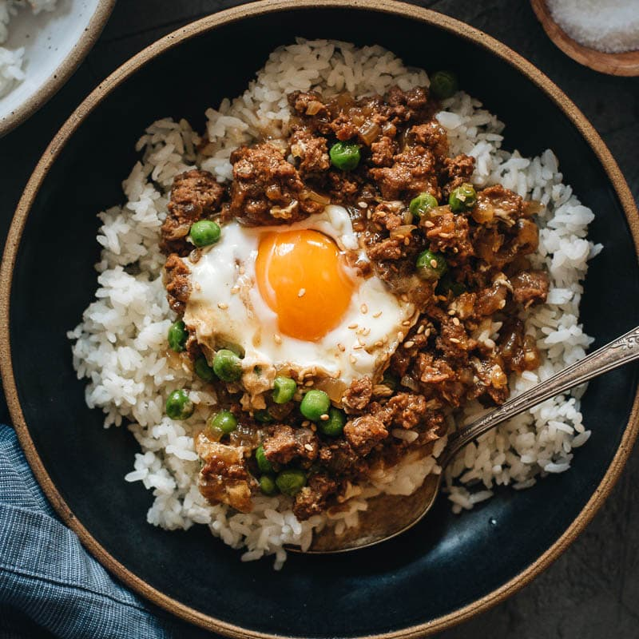

Minced Meat with Rice

My personal comfort food! My Mom would make this every now and then. Reminds me of home and comfort!
It's rare to find this unless you're at an authentic east asian restaurant.
Ingredients
- Minced meat
- Fried egg
- Green peas
- Rice
- Sesame seeds
How to cook
- Mix the minced meat and green peas and steam it in a pressure cooker
- Cook a fried egg and lightly season it with salt and soy sauce
- Prepare a bowl of rice and layer the minced meat on top of it
- Add the fried egg on top
- Enjoy!